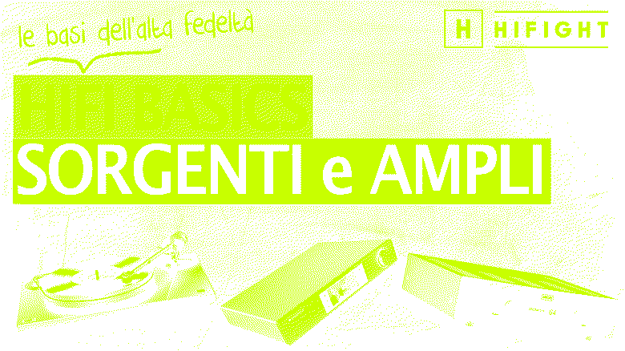

01
Streaming War · YouTube
Piattaforme Streaming
Editor & creative lead: struttura del racconto, montaggio serrato, grafica di supporto sui confronti tra servizi.
MontaggioGraficaScrittura
01 / 03▶ Guarda
Maurizio
Senior videomaker. Scrivo, giro, monto, coloro. Sette anni tra contenuti, motion graphics ed eventi live.
Editor & creative lead: struttura del racconto, montaggio serrato, grafica di supporto sui confronti tra servizi.
Motion graphics designer: titolazioni, transizioni e ritmo visivo del trailer.

03Regia e fotografia. Formato divulgativo a puntate: luce controllata, inquadrature pulite, montaggio didattico.
Contenuti verticali per il feed: gancio nei primi due secondi,
testo in sovrimpressione, montaggio a taglio secco.
Tocca per guardarli con audio.
Sono Maurizio, videomaker da sette anni, base a Padova. Ho iniziato tra grafica e riprese, sono passato per la regia di eventi live e oggi faccio soprattutto contenuti: scrivo, giro, monto, curo colore e motion.
La parte che mi diverte di più resta il montaggio — trovare il ritmo che tiene le persone incollate fino all'ultimo secondo.
Cerchi un videomaker? Scrivimi →